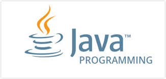
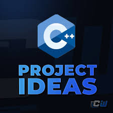
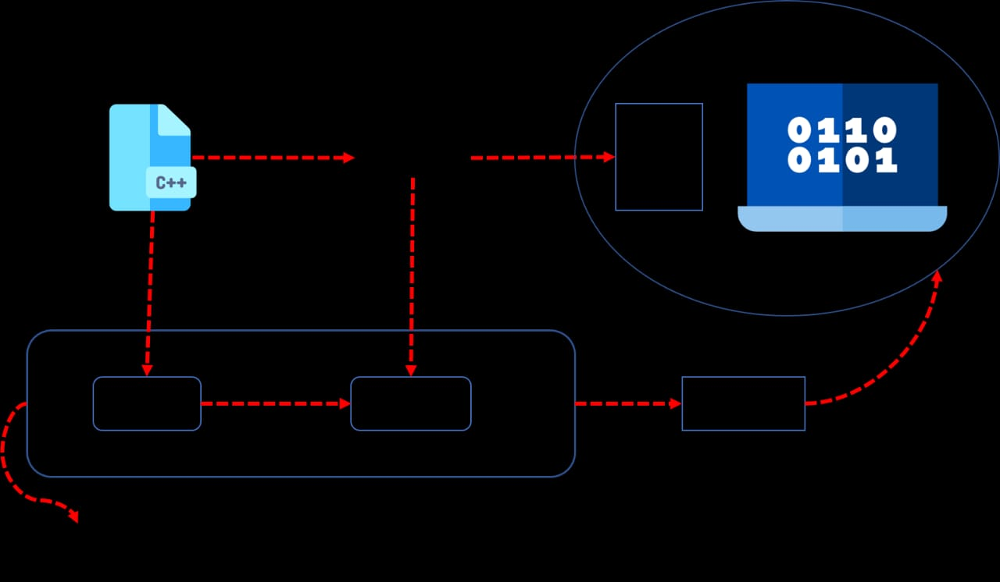

BAHASA-PEMROGRMAAN-KOMPUTER
1.JAVA NETBEANS

Bahasa Pemrograman Java ini berorientasi objek , dan dapat dijalankan pada
berbagai platform sistem operasi. Bahasa ini banyak mengadopsi sintaksis
yang terdapat pada C dan C++ namun dengan sintaksis model objek yang lebih
sederhana. Paradigma OOP menyelesaikan masalah dengan merepresentasikan
masalah ke model objek. Bahasa yang berorientasi pada objek pun mempunyai
karakteristik yang sama dengan objek-objek di dunia nyata.
k
penjelasan-mengenai-javanetbeans

Kode pada bahasa pemrograman Java dituliskan dalam file teks dan disimpan
dengan nama file yang sama persis dengan nama classnya serta diberikan ekstensi java .
File tersebut kemudian di kompile dengan compiler java sehingga akan menghasilkan
1 file dengan ekstensi class . File berekstensi class yang akan dijalankan diatas
Java Virtual Machine dengan menggunakan java launcer toolSampai saat ini, Java menjadi
bahasa pemrograman yang telah banyak digunakan oleh para developer karena keunggulannya.
Di antaranya, mudah untuk diaplikasikan pada beberapa platform, bahasa pemrograman yang
berorientasi pada objek, mempunyai library yang lengkap, sampai mudah dipelajari karena mirip dengan bahasa C++.
cara-kerja java

Kode pada bahasa pemrograman Java dituliskan dalam file teks dan disimpan
dengan nama file yang sama persis dengan nama classnya serta diberikan ekstensi java .
File tersebut kemudian di kompile dengan compiler java sehingga akan menghasilkan
1 file dengan ekstensi class . File berekstensi class yang akan dijalankan diatas
Java Virtual Machine dengan menggunakan java launcer tool
2.DEV C++

Bahasa C++ kadang disebut juga sebagai «C with Classes». Ini karena
perbedaan paling utama antara bahasa C dan C++ ada di dukungan ke pemrograman berbasis objectC++ adalah bahasa pemrograman hasil pengembangan bahasa C. Sintak penulisan C dan C++ hampir mirip, tetapi berbeda dalam langkah penyelesaian masalah.
Pada bahasa C, langkah penyelesaian masalah dilakukan dengan cara membagi-baginya ke dalam sub masalah yang lebih kecil.
Cara ini dikenal sebagai bahasa pemrograman prosedural.
Sementara, C++ justru berorientasi pada objek.l
cara kerja c++

PC atau Laptop hanya mengerti satu bahasa dan bahasa itu adalah bahasa yang terdiri dari set instruksi yang berisikan satu dan nol (instruksi mesin), selain dari itu PC/ atau laptop tidak akan mengenalnya.
Source code C++, merupa bahasa pemrograman yang berisi sintak berbahasa inggris, yang tentunya tidak bisa langsung dibaca oleh PC/ Laptop, untuk itulah dibutuhkan yang namanya compiler.